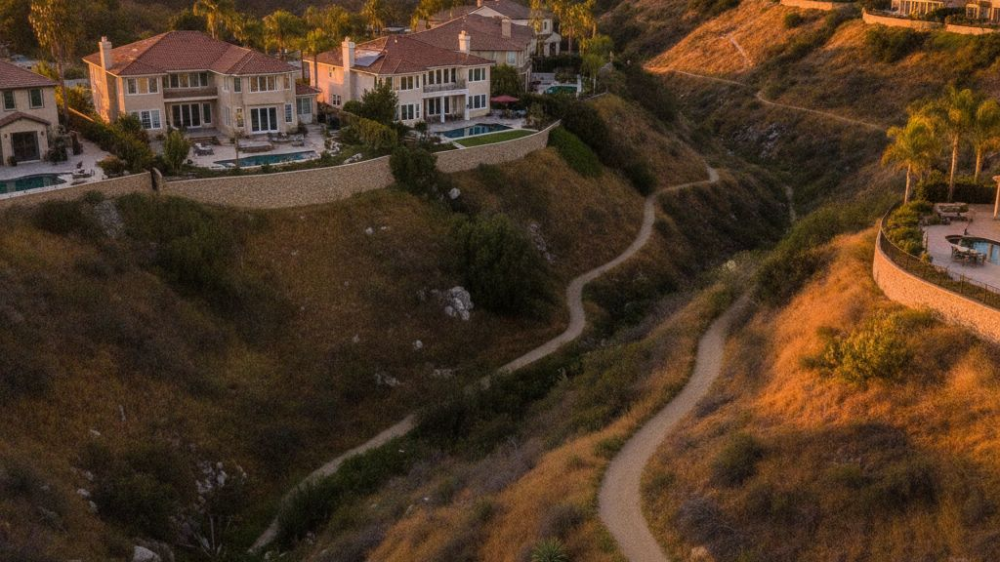
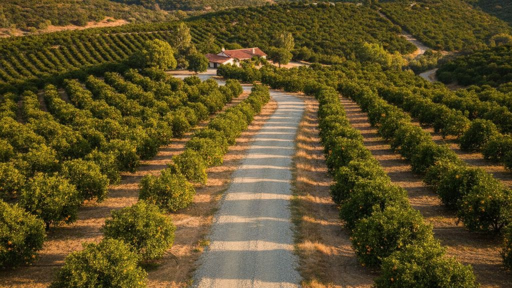
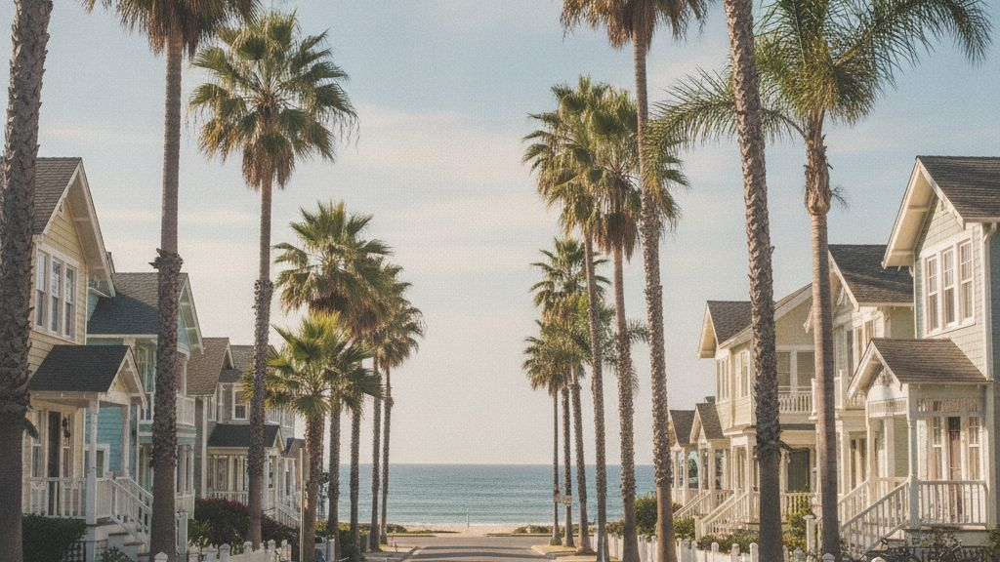

Central City of San Diego
The urban core and the streetcar-era neighborhoods around Balboa Park, where century-old bungalows sit beside new mid-rise condos.

San Diego Beach & Bay Neighborhoods
Oceanfront and bayfront districts where view corridors, coastal-zone rules and lot position can swing value sharply from one block to the next.

Mid-City Mesas & Canyons
Postwar mesa-top tracts and canyon-rim streets in the middle of the city, dominated by single-story homes from the 1950s through the 1970s.

Northern San Diego & the I-15 Corridor
Master-planned communities of the 1970s through today, with homeowner associations, Mello-Roos districts and highly comparable housing stock.

Southeastern San Diego & the Border
Hillside and border-adjacent neighborhoods with a wide mix of older homes, newer townhome communities and multigenerational households.

North County Coast
North County's beach cities and their inland canyons, from bluff-top cottages to newer hillside subdivisions east of Interstate 5.

North County Inland
Valley cities and estate enclaves along State Route 78 and Interstate 15, mixing tract neighborhoods with large-lot and gated properties.

North County Groves & Ranchland
Avocado and citrus country, horse properties and rural acreage where wells, septic systems and agricultural use shape value.

East County
Foothill cities and unincorporated communities east of State Route 125, from established La Mesa streets to rural Alpine parcels.

South Bay & Coronado
Chula Vista's planned villages, older South Bay neighborhoods and the island-like enclave of Coronado.

Mountains, Backcountry & Desert
Mountain towns, high-desert ranches and Anza-Borrego communities where comparable sales are sparse and every assignment needs extra research.
Have a property that needs a value?
Send the address and the reason for the appraisal. You will get a firm quote and a schedule before anything is booked.